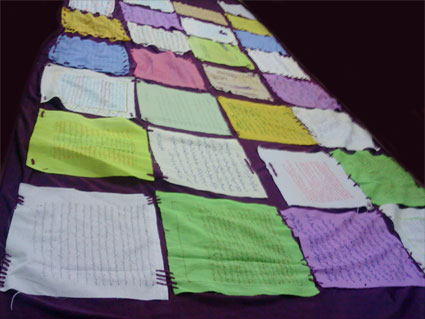
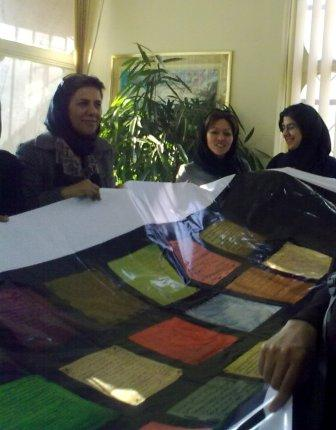
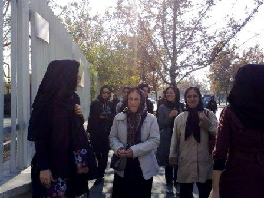
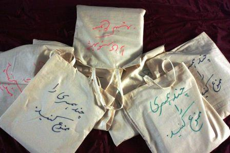
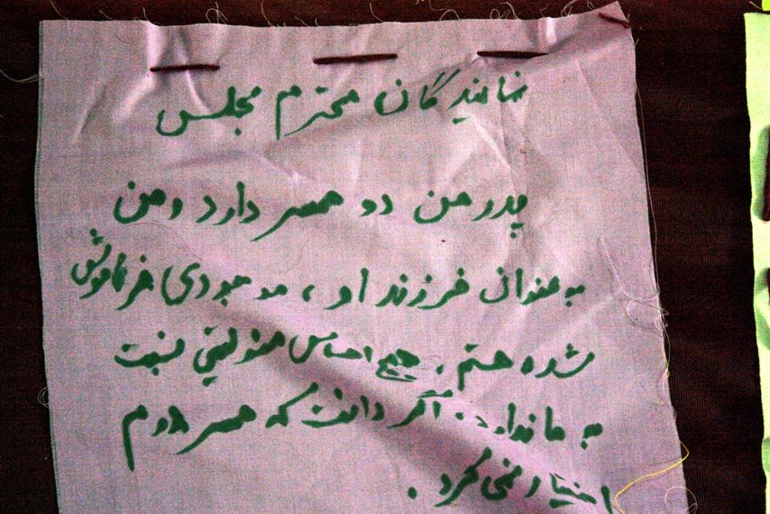
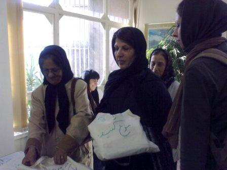

|
|

در اعتراض به چندهمسری: 10هزار امضای دیگر به همراه چهل تکه ای از رنج زنان به مجلس برده شد
سه شنبه9 آذر 1389
تغییر برای برابری: ظهر امروز، سه شنبه 9 آذر، حدود 30 نفر از مدافعان حقوق برابر، 10هزار نامه امضاء شده در اعتراض به ترویج چندهمسری را به مجلس بردند تا تحویل نمایندگان کمیسون های حقوقی و قضایی، فرهنگی و اجتماعی بدهند.

سالن ملاقات مردم با نمایندگان شلوغ است. زنان مخالف چند همسری در جای جای سالن نشسته اند و توجه ها را به خود جلب می کنند. زنان برای دادخواهی آمده اند به جایی که نامش خانه ملت است. چندنفر به گیشه هایی که وقت ملاقات مردمی می دهد می روند و درخواست دیدار با اعضای کمیسیون قضایی و حقوقی، اجتماعی و فرهنگی را می کنند. درخواست آنها رد می شود. سرانجام به یکی از گیشه ها رفته و درخواست ملاقات با موسی قربانی یکی از اعضای کمیسیون حقوقی و قضایی را دارند. ماموری که پشت گیشه نشسته می گوید تنها 3 نفر می توانند با نماینده مورد نظر دیدار کنند. با دفتر قربانی تماس می گیرد و توضیح می دهیم که ما که هستیم و برای چه درخواست دیدار داریم. مسئول دفتر قربانی می گوید 10دقیقه دیگر زنگ بزنید. ساعتی بعد تلاش های ما برای دیدار آقای نماینده هنوز به نتیجه نرسیده. در نهایت تنها به یک نفر اجازه دیدار می دهند. می شنویم که مامور وقت دهی می گوید: «یکی از زیردستم دررفت ولی به بقیه وقت ملاقات ندادم».

یک نفر به نمایندگی از جمع همراه با بخشی از امضاها می رود و ما در سالن به انتظار می نشینیم. سه مامور نظامی به نزدیک ما می آیند و پرس و جو می کنند که از کجا هستید و چه می خواهید. توضیح می دهیم که وقت گرفته ایم و برای تحویل نامه های مردم آمده ایم. چند لحظه بعد، آقایی با لباس شخصی به سمت ما می آید و با لحنی نه چندان خوشایند ما را سوال پیچ می کند و دوباره توضیح می دهیم که برای چه به مجلس آمده ایم. می گوید که مسئول حراست مجلس است و اگر بگوییم از طرف چه ارگان و انجمنی آمده ایم، می تواند به ما کمک کند. توضیح می دهیم که جمعی از زنان هستیم و به ماده 23 لایحه حمایت از خانواده و چندهمسری اعتراض داریم و می خواهیم با نماینده مان صحبت کنیم تا این ماده تصویب نشود. اعتراض می کند که «چرا جمعی آمده اید و نماینده می فرستادید اینجا مراجعه کننده زیاد است، شما جای زیادی اشغال کرده اید، بروید» و می گوییم اینجا خانه ملت است و همه ما این درخواست را داریم.

کم کم می رود و ما هنوز منتظر هستیم. فرد دیگری می آید و پرس و جو تکرار می شود. بعد از مدتی دوستی که به ملاقات آقای قربانی رفته بود، می آید همراه با امضاها و می گوید «قربانی نبود و مسئول دفترش هم چون نمی خواست رسید برای تحویل امضاها بدهد، امضاها را تحویل ندادم».
بلند می شویم و به سمت دفتر لاریجانی می رویم تا امضاها و چهل تکه «رنج زنان از چندهمسری» را تحویل دهیم. ماموران حراست یعنی همان دو نفری که سراغمان آمده بودند ما را تا بیرون از مجلس مشایعت می کنند! همین که وارد دفتر لاریجانی می شویم مسئول دفترش می گوید این همه خانم کجا بودند؟ قبل از آنکه ما پاسخ دهیم مردی دیگر از اتاق کناری می گوید که ما را در سالن ملاقات مردم با نمایندگان مجلس دیده است.
خودمان را معرفی می کنیم. می گوییم امضاهایمان را در مجلس تحویل نگرفته اند و به سراغ شما آمدیم تا همانند بار گذشته از کمیسیون حقوقی و قضایی مجلس برای ما وقت بگیرید. توضیح می دهیم که امروز همراه 10هزار امضای دیگر آمده ایم و میخواهیم که دوباره برای ما وقت ملاقات بگیرید و این امضاها امانتی در دست ما و باید آن را به نمایندگان تحویل دهیم. اما این بار نمی پذیرد.

ما دوباره می گوییم به هر حال اینجا دفتر آقای لاریجانی است، می شود برای ملاقات با ایشان به ما وقت بدهید؟ می گوید ایشان صحن علنی هستند و معلوم نیست کی بیایند. یکی خطاب به مسئول دفتر می گوید آقا شما مثل پسر من هستی شما راضی می شوی کسی سر خواهر شما هوو بیاورد؟ چندهمسری بنیان خانواده را از بین می برد. مرد می گوید در ایران هیچ مردی چندهمسر ندارد، اصلاً مردها چند زن نمی گیرند!

یکی دیگر از ما می گوید چندهمسری به کودکان هم آسیب می زند. چهل تکه درست شده را باز می کنیم تا آقایان قصه غصه های زنان این سرزمین را بخوانند. به مردانی که آنجا هستند می گوییم شما هم بخوانید این سرگذشت ها را و ببینید این زنها چه کشیده اند. مسئول دفتر می گوید اینها را چه کسانی نوشته اند؟ می گوییم زنانی که در قانون حقوقشان دیده نشده است، اینجا سرگذشتشان را گذاشته اند تا خوانده شود، تا دیده شود رنج هایشان، تا قانون گذار باز هم به فراموشی نسپارد حقوق آنها را، تا فرزندانشان روزهای بهتری داشته باشند، تا روزهای بهتری داشته باشد ایرانمان...

یکی از همراهان شروع می کند به خواندن یکی از این سرگذشت ها. درباره زنی است اهل بم که نوشته تا قبل از زلزله ازدواج مجدد در بم نبوده ولی الان زیاد شده است...
رنج های زنان را تا می کنیم به امید اینکه روزی بیاید که هیچ زنی امنیتش به خاطر هوسبازی همسرش به خطر نیافتد.
10هزار امضا را تحویل می دهیم به همراه چهل تکه، سمبلی از دردهای هوار شده قانون گذار در دل زنان ایرانی.